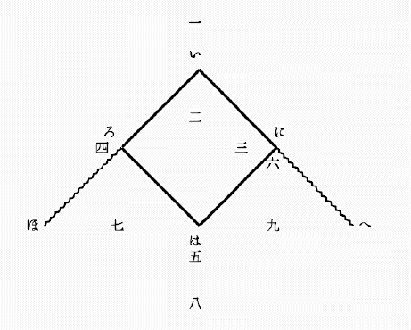

| ベースボール | |
| 正岡 子規 | |
| (2012) | |
ベースボール
正岡子規
○ベースボール に至りてはこれを行う者極めて少くこれを知る人の区域も甚 だ狭 かりしが近時第一高等学校と在横浜米人との間に仕合 ありしより以来ベースボールという語ははしなく世人の耳に入りたり。されどもベースボールの何たるやはほとんどこれを知る人なかるべし。ベースボールはもと亜米利加 合衆国の国技とも称すべきものにしてその遊技の国民一般に賞翫 せらるるはあたかも我邦 の相撲 、西班牙 の闘牛 などにも類せりとか聞きぬ。（米人のわれに負けたるをくやしがりて幾度 も仕合を挑 むはほとんど国辱 とも思えばなるべし）この技の我邦に伝わりし来歴は詳 かにこれを知らねどもあるいはいう元新橋鉄道局技師（平岡凞 という人か）米国より帰りてこれを新橋鉄道局の職員間に伝えたるを始 とすとかや。（明治十四、五年の頃 にもやあらん）それよりして元東京大学（予備門）へ伝わりしと聞けどいかがや。また同時に工部大学校、駒場 農学校へも伝わりたりと覚ゆ。東京大学予備門は後の第一高等中学校にして今の第一高等学校なり。明治十八、九年来の記憶 に拠 れば予備門または高等中学は時々工部大学、駒場農学と仕合いたることあり。また新橋組と工部と仕合いたることもありしか。その後青山英和学校も仕合 に出掛 けたることありしかど年代は忘れたり。されば高等学校がベースボールにおける経歴は今日に至るまで十四、五年を費せりといえども（もっとも生徒は常に交代しつつあるなり）ややその完備せるは二十三、四年以後なりとおぼし。これまでは真の遊び半分という有様なりしがこの時よりやや真面目 の技術となり技術の上に進歩と整頓 とを現せり。少くとも形式の上において整頓し初めたり。すなわち攫者 が面と小手 （撃剣 に用うる面と小手のごとき者）を着けて直球 を攫 み投者 が正投 を学びて今まで九球なりし者を四球（あるいは六球なりしか）に改めたるがごときこれなり。次にその遊技法につきて多少説明する所あるべし。
（七月十九日）
○ベースボールに要するもの
はおよそ千坪ばかりの平坦なる地面
（芝生
ならばなお善
し）皮にて包みたる
小球
（直径二寸ばかりにして中は護謨
、糸の類
にて充実
したるもの）投者
が投げたる球を打つべき木の
棒
（長さ四尺ばかりにして先の方やや太く手にて持つ処
やや細きもの）一尺四方ばかりの荒布にて坐蒲団のごとく拵えたる
基
三個本基
および投者
の位置に置くべき鉄板様の物一個ずつ
、攫者
の後方に張りて球を遮るべき網
（高さ一間半、幅
二、三間位）競技者十八人
（九人ずつ敵味方に分るるもの）審判者
一人
、幹事一人
（勝負を記すもの）等なり。
○ベースボールの競技場
図によりて説明すべし。

直線いほ
及びいへ
（実際には線なし、あるいは白灰にて引く事あり）は無限に延長せられたるものとし直角ほいへ
の内は無限大の競技場たるべし。但
し実際は本基
にて打者
の打ちたる球の達する処すなわち限界となる。いろはに
は正方形にして十五間四方なり。勝負は小勝負九度
を重ねて完結する者にして小勝負一度とは甲
組（九人の味方）が防禦
の地に立つ事と乙
組（すなわち甲組の敵）が防禦の地に立つ事との二度の半勝負に分るるなり。防禦の地に立つ時は九人おのおのその専務に従い一、二、三等の位置を取る。但しこの位置は勝負中多少動揺
することあり。甲組競技場に立つ時は乙組は球を打つ者ら一、二人（四人を越
えず）の外
はことごとく後方に控
えおるなり。
（い） 本基
（ろ） 第一基
（基を置く）
（は） 第二基（基を置く）
（に） 第三基（基を置く）
（一） 攫者
の位置（攫者の後方に網を張る）
（二） 投者
の位置
（三） 短遮
の位置
（四） 第一基人
の位置
（五） 第二基人の位置
（六） 第三基人の位置
（七） 場右
の位置
（八） 場中
の位置
（九） 場左
の位置
○ベースボールの勝負
攻者
（防禦者の敵）は一人ずつ
本基
（い）より発して各
基
（ろ、は、に）を通過し再び本基に帰るを務めとす
、かくして帰りたる者を
廻了
という
。ベースボールの勝敗は九勝負終りたる後ち
、各組廻了の数の総計を比較し多き方を勝とするなり
。例えば「八に対する二十三の勝」というは乙組の廻了の数八甲組廻了の数二十三にして甲組の勝なりという意なり。されば競技者の任務を言えば攻者
の地に立つ時はなるべく廻了の数を多からしめんとし、防者
の地に立つ時はなるべく敵の廻了の数を少からしめんとするにあり。廻了というは正方形を一周することなれどもその間には第一基
第二基第三基等の関門あり各関門には番人（第一基は第一基人これを守る第二第三皆
しかり）あるをもって容易に通過すること能
わざる也
。走者
（通過しつつある者）ある事情のもとに通過の権利を失うを除外
という。（普通に殺される
という）審判官
除外と呼べば走者（または打者
）は直
ちに線外に出
でて後方の控所
に入らざるべからず。除外三人に及べばその半勝負は終るなり。故に攻者は除外三人に及ばざる内に多く廻了
せんとし防者は廻了者を生ぜざる内に三人の除外者を生ぜしめんとす。除外三人に及べば防者代りて攻者となり攻者代りて防者となる。かくのごとくして再び除外三人を生ずればすなわち第一小勝負
終る。かれ攻
めこれ防ぎおのおの防ぐ事九度、攻むる事九度に及びて全勝負
終る。
○ベースボールの球
ベースボールにはただ一個の
球
あるのみ
。しかして球は常に防者の手にあり
。この球こそこの遊戯の中心となる者にして球の行く処すなわち遊戯の中心なり
。球は常に動く故に遊戯の中心も常に動く
。されば防者九人の目は瞬時も球を離るるを許さず
。打者走者も球を見ざるべからず
。傍観者もまた球に注目せざればついにその要領を得ざるべし
。今尋常
の場合を言わば球は投者
の手にありてただ本基
に向って投ず。本基の側には必らず打者
一人（攻者の一人）棒
を持ちて立つ。投者の球正当の位置に来れりと思惟
する時は（すなわち球は本基の上を通過しかつ高さ肩
より高からず膝
より低くからざる時は）打者必ずこれを撃
たざるべからず。棒球
に触
れて球は直角内に落ちたる時（これを正球
という）打者は棒を捨てて第一基に向い一直線に走る。この時打者は走者
となる。打者が走者となれば他の打者は直ちに本基の側に立つ。しかれども打者の打撃
球に触れざる時は打者は依然
として立ち、攫者
は後（一）にありてその球を止めこれを投者
に投げ返す。投者は幾度となく本基に向って投ずべし。かくのごとくして一人の打者は三打撃を試むべし。第三打撃の直球
（投者の手を離れていまだ土に触れざる球をいう）棒
と触れざる者攫者
よくこれを攫
し得ば打者は除外
となるべし。攫者これを攫し能わざれば打者
は走者
となるの権利あり。打者の打撃したる球
空に飛ぶ時（遠近に関せず）その球の地に触れざる前これを攫する時は（何人にても可なり）その打者は除外となる。
（未完）
（七月二十三日）
○ベースボールの球
（承前） 場中に一人の走者
を生ずる時は球
の任務は重大となる。もし走者同時に二人三人を生ずる時は更
に任務重大となる。けだし走者の多き時は遊技いよいよ複雑となるにかかわらず球は終始ただ一個あるのみなればなり。今走者と球との関係を明かにせんに走者はただ一人敵陣
の中を通過せんとするがごとき者、球は敵の弾丸
のごとき者なり。走者は正方形（前回の図を参照すべし）の四辺を一周せんとする者にして一歩もこの線外に出ずるを許さずしかしてこの線上において一たび敵の球に触るれば立どころに討ち死
（除外
）を遂ぐべし
。｟ここに球に触るるというは防者の一人が手に球を持ちてその手を走者の身体の一部に触るることにして決して球を敵に投げつくることに非ず
。もし投げたる球が走者に中
れば死球
といいて敵を殺さぬのみならずかえって防者の損になるべし｠されば走者がこの危険の中に身を投じて唯一
の塁壁
と頼
むべきは第一第二第三の基
なり。けだし走者の身体の一部この基
（坐蒲団
のごとき者）に触れおる間は敵の球たとい身の上に触るるも決して除外とならず
。（この場合において基は鬼事
のおか
のごとし）故に走者はなるべく球の自己に遠かる時を見て疾走
して線を通過すべし。例えば走者第一基にあり、これより第二基に到
らんとするには投者
が球を取て本基（の打者
）に向って投ずるその瞬間
を待ち合せ球手を離るると見る時走り出すなり。この時攫者
はその球を取るやいなや直ちに第二基に向って投ずべく第二基人
はその球を取りて走者に触れんと擬
すべし。走者は匆卒
の際にも常に球の運動に注目しかかる時直ちに進んで険を冒
し第二基に入るか退いて第一基に帰るかを決断しこれを実行せざるべからず。第二基より第三基に移る時もまたしかり。第三基より本基
に回る時もまたしかり。但
第三基は第二基よりも攫者に近く本基は第三基よりも獲者に近きをもって通過せんとするには次第に危険を増すべし。走者
二人ある時は先に進みたる走者をまず斃
さんとすること防者が普通の手段なり。走者三人ある時はこれを満基
という。（一基に走者一人以上留まることを許さず故に走者は三人をもって最多数とす）満基の時打者が走者となれば今までの走者は是非
とも一基ずつ進まざるべからず。これ最も危険なる最も愉快
なる場合にしてこの時の打者の一撃
は実に勝負にも関すべく打者もし好球を撃
たば二人の廻了
を生ずることあり、もし悪球を撃たば三人ことごとく立尽
（あるいは立往生という）に終ることさえあるなり。とにかく走者多き時は人は右に走り左に走り球は前に飛び後に飛び局面忽然
変化して観者をしてその要を得ざらしむることあり。球戯
を観る者は球を観るべし
。
○ベースボールの防者
防禦の地にある者すなわち遊技場中に立つ者の役目を説明すべし。攫者
は常に打者
の後に立ちて投者
の投げたる球を受け止めるを務めとす。その最も力を尽
す処は打者が第三撃にして撃ち得ざりし時その直球
を攫
むと、走者の第二基
に向って走る時球
を第二基人
に投ずると、走者
の第三基に向って走る時球を第三基人に投ずると、走者の本基
に向って来る時本基に出てこれを喰
いとめると等なりとす。投者
は打者に向って球を投ずるを常務と為
す。その正投
の方、外曲
、内曲
、墜落
等種々ありけだし打者の眼を欺
き悪球を打たしめんとするにあり。この外投者は常に走者に注目し走者基
を離るること遠き時はその基に向って球を投ずる事等あり。投者攫者二人は場中最枢要
の地を占
むる者にして最も熟練を要する役目とす。短遮
は投者と第三基の中ほどにあり、打者の打ちたる球を遮
り止め直ちに第一基に向って投ずるを務
とす。この位置は打者の球の多く通過する道筋なるをもって特にこの役を置く者にして短遮の任また重し。第一基は走者を除外
ならしむるにもっとも適せる地なり。短遮等より投げたる球を攫み得て第一基を踏
むこと（もしくは身体
の一部を触
るること）走者より早くば走者は除外となるなり。けだし走者は本基より第一基に向って走る場合においては単に進むべくしてあえて退くべからざる位置にあるをもって球のその身に触るるを待たずして除外となることかくのごとき者あり。第二基人第三基人の役目は攫者等より投げたる球を攫み走者の身に触れしめんとする者にしてこの間に夾撃
等面白き現象を生ずる事あり。場右
、場中
、場左
のごとき皆打者の打ちたる飛球
を攫み（この時打者は除外となる）またはその球を遮り止めて第一基等に向いこれを投ぐるを役目とす。しかれども球戯
は死物にあらず防者にありてはただ敵を除外ならしむるを唯一の目的とするをもってこれがためには各人皆臨機応変の処置を取るを肝要
とす。防者は皆打者の球は常に自己の前に落ち来
る者と覚悟
せざるべからず。基人
は常に自己に向って球を投げらるる者と覚悟せざるべからず。
○ベースボールの攻者
攻者は打者
と走者
の二種あるのみ。打者はなるべく強き球を打つを目的とすべし。球強ければ防者の前を通過するとも遮止
せらるることなし。球の高く揚
るは外観美なれども攫まれやすし。走者は身軽にいでたち、敵の手の下をくぐりて基
に達すること必要なり。危険なる場合には基に達する二間ばかり前より身を倒
して辷
りこむこともあるべし。この他特別なる場合における規定は一々これを列挙せざるべし。けだし一々これを列挙したりともいたずらに混雑を加うるのみなればなり。
○ベースボールの特色
競漕
競馬競走のごときはその方法甚だ簡単にして勝敗は遅速
の二に過ぎず。故に傍観者
には興少
し。球戯はその方法複雑にして変化多きをもって傍観者にも面白く感ぜらる
。かつ所作の活潑にして生気あるはこの遊技の特色なり
、観者をして覚えず喝采せしむる事多し
。但しこの遊びは遊技者に取りても傍観者に取りても多少の危険を免
れず。傍観者は攫者
の左右または後方にあるを好
しとす。
ベースボールいまだかつて訳語あらず、今ここに掲
げたる訳語はわれの創意に係
る。訳語妥当
ならざるは自らこれを知るといえども匆卒
の際改竄
するに由
なし。君子
幸に正
を賜え。
升
附記
（七月二十七日）
底本：「ことばの探偵〈ちくま文学の森14
〉」筑摩書房
１９８８（昭和63
）年12
月20
日第1
刷
初出：「日本」日本新聞社
１８９６（明治29
）年7
月19
日号－27
日号
※図の製作にあたっては、「子規全集 第十一卷 随筆一」講談社（１９７５（昭和50
）年4
月18
日第1
刷）を適宜参照しました。
入力：京都大学電子テクスト研究会入力班（大石尺）
校正：京都大学電子テクスト研究会校正班（大久保ゆう）
２００４年11
月4
日作成
青空文庫作成ファイル：
このファイルは、インターネットの図書館、青空文庫（http://www.aozora.gr.jp/）で作られました。入力、校正、制作にあたったのは、ボランティアの皆さんです。